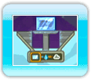

● Trouver les Rainbow Drops (gouttes d’arc-en-ciel)!
Le but de Fluidity est de ramasser toutes les gouttes d’arc-en-ciel éparpillées dans les quatre chapitres de l’Aquaticus, chacune contenant une partie de l’essence magique du livre. Pour les atteindre, vous devrez relever des défis tordus, réparer des machines, aider des gens et combattre de nombreux ennemis!
● Ramassez des bulles d’eau pour gagner des vies!
Malheureusement, les pages de l’Aquaticus sont dangereuses et le sont encore plus depuis que l’Influence pollue l’environnement. En complément des dangers liés à l'environnement tels que des sablières et des lacs de lave, l’Influence se manifeste sous diverses formes abominables qui essaieront d’entraver votre progression.
Heureusement, vous pouvez ramasser des bulles d’eau, se trouvant un peu partout dans votre environnement, pour remplir vos réserves d’eau. Une fois complètement remplie, une réserve sert de vie supplémentaire au cas où vous perdriez trop d’eau.
● Indices de bouton
Lors de votre quête dans l’Aquaticus, des indices de bouton s’affichent parfois à l’écran, pour indiquer les actions disponibles selon votre position. Appuyez sur le bouton indiqué pour interagir avec l’environnement. Vous pouvez activer des interrupteurs, démarrer des machines et tellement plus!

● Modificateur d'état
Dans l'Aquaticus, l’eau peut se trouver sous trois formes : en flaque d’eau (état liquide), en glace (état solide), et en nuage (état gazeux). Vous n’aurez accès qu’à la forme de flaque d'eau jusqu’à ce que l’Aquaticus ait assez de force pour vous donner d’autres formes.
Vous trouverez des modificateurs d'état dans les pages de l’Aquaticus. Entrez dedans, utilisez  pour sélectionner l'état désiré et confirmez avec . Les pages suivantes contiennent plus de détails concernant les différents pouvoirs associés à chacune des formes.
pour sélectionner l'état désiré et confirmez avec . Les pages suivantes contiennent plus de détails concernant les différents pouvoirs associés à chacune des formes.


